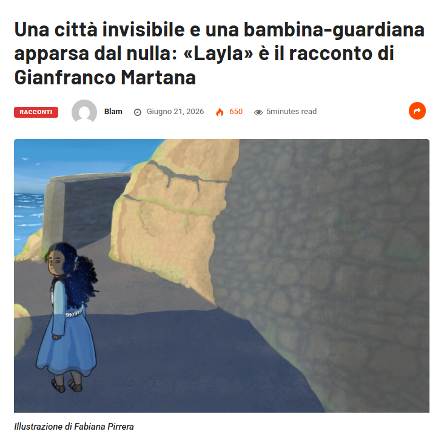
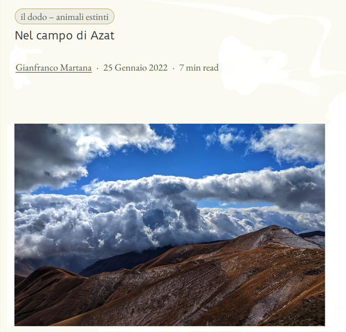
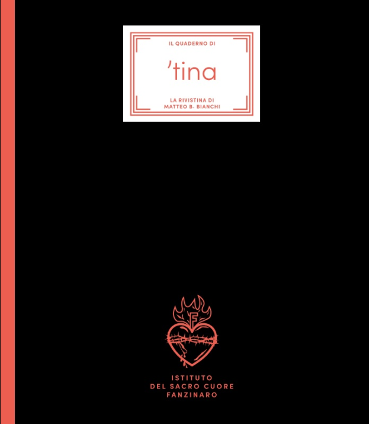
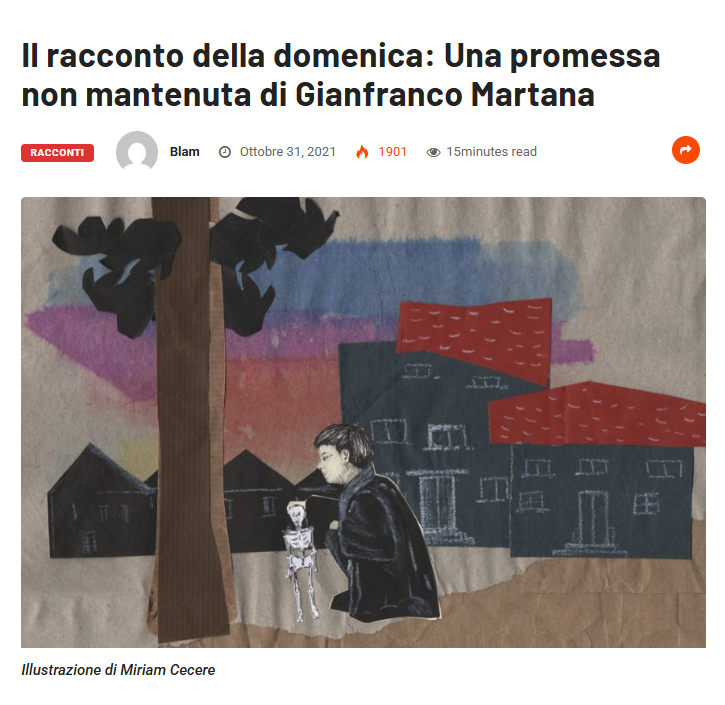
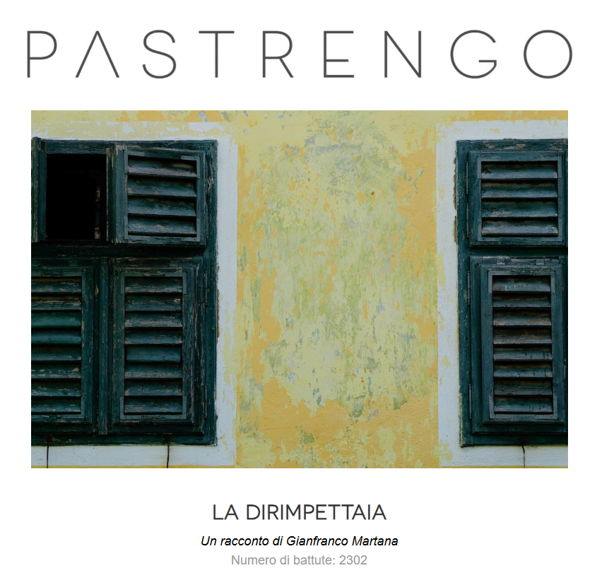
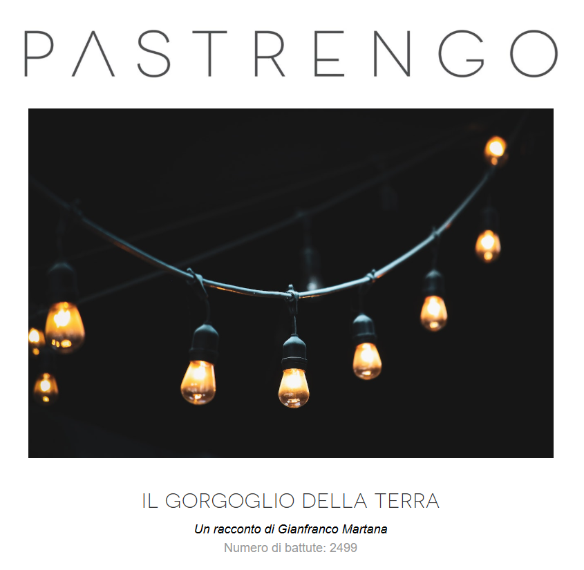

Layla
Nella medina di Tangeri, un turista incontra una bambina misteriosa che gli indicherà la strada per uscire da quel labirinto.
Leggi su Blam!scrittore
Sono cresciuto a Salerno, ho vissuto a Brighton e dal 2018 abito a Valencia. Sono nato sul mare per caso, ci sono rimasto per scelta.
Dopo la laurea in Letteratura Italiana con una tesi su Luigi Meneghello, ho ottenuto un dottorato in Italianistica indagando i rapporti fra gli scrittori italiani e il cinema del primo Novecento.
Ho realizzato il cortometraggio Indice di frequenza con Alessandro Haber e sono stato finalista al Premio Solinas con la sceneggiatura Mammaliturchi!
Ho pubblicato il romanzo Un’opera di bene e circa quaranta racconti apparsi su riviste letterarie e antologie in Italia e Spagna.
Attualmente lavoro al romanzo Mammaliturchi! (dall’omonima sceneggiatura) e a una raccolta di racconti dedicati all’infanzia e all’adolescenza.
Le mie storie spesso nascono quando un dettaglio che sembra insignificante cambia il modo in cui guardiamo la realtà. Da quel momento, le cose non sono più le stesse.
Quando non scrivo, lavoro come guida turistica.
Parlo correntemente spagnolo, francese e inglese. Me la cavo discretamente con il valenciano. Poi ho deciso di studiare l’arabo: me ne pento ogni giorno ma persevero.
Mi piacerebbe suonare il pianoforte e aggiustare le cose rotte. Non ho talento per nessuna delle due cose.
Una selezione di miei racconti pubblicati in riviste letterarie.

Nella medina di Tangeri, un turista incontra una bambina misteriosa che gli indicherà la strada per uscire da quel labirinto.
Leggi su Blam!
Un missile, lanciato chissà da chi, si pianta senza esplodere in un campo ai margini di un villaggio caucasico, stravolgendo la vita dei suoi abitanti.
Leggi su Altri animali
Un giovane solitario e povero va regolarmente al supermercato per cercare del cibo in offerta. L’apparizione di un uomo che comincia a contendergli il bottino potrebbe costringerlo a ripensare la propria vita.
Leggi su ’tina
Un bambino va a sotterrare uno scheletro giocattolo, ma l’impresa si rivela meno facile del previsto.
Leggi su Blam!
Quando c’era il Covid, ci si affacciava alle finestre per cantare. Qualcuno lo faceva anche per rivedere la giovane dirimpettaia.
Leggi su Patrengo
Un bambino racconta il terremoto dell’Irpinia. Con lui, quella notte, un’intera comunità si ritrova sospesa tra paura e sopravvivenza.
Leggi su PastrengoLa morte del padre spinge un giovane professore di filosofia a rielaborare un legame conflittuale. Attraverso i ricordi d’infanzia e il mare, il rancore cede il passo al silenzio.
Leggi QUISe hai letto qualcosa che ti ha incuriosito, sarò felice di ricevere un tuo messaggio.